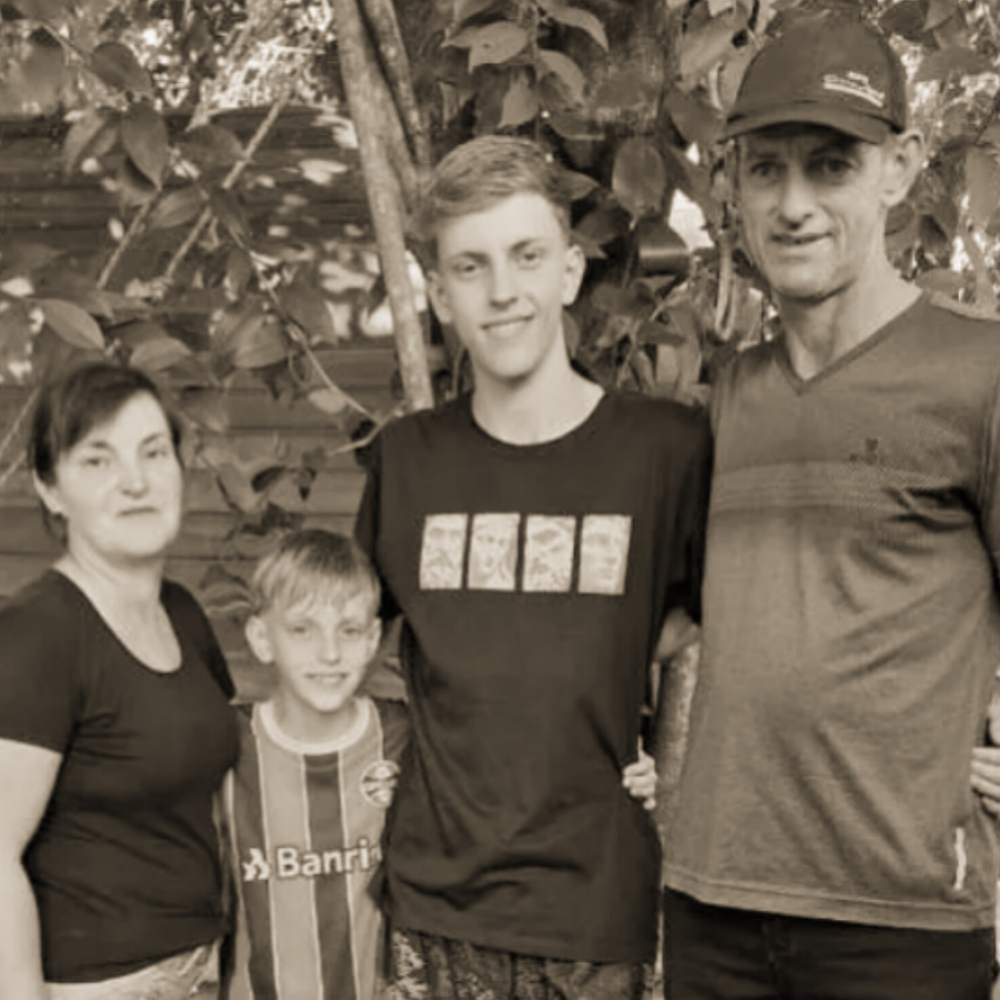

Família inteira morre
em acidente
Sáb. 19 de Abril de 2025
O Toyota Corolla e a GM S10 colidiram na BR-392, no início da noite de sábado (19/7). As causas que provocaram o acidente de trânsito estão sendo investigadas.
O casal, Valmir Patzold e Janete Scher, e os filhos, Vinicius Patzold e Douglas Patzold, morreram no local. A família, residente em São Pedro do Butiá, viajava no automóvel. Na camioneta, estava apenas o motorista. Ele sofreu ferimentos no tórax e foi encaminhado para atendimento hospitalar.
O Corpo de Bombeiros precisou trabalhar no desencarceramento de três das quatro vítimas fatais. A mulher foi ejetada para fora do veículo.